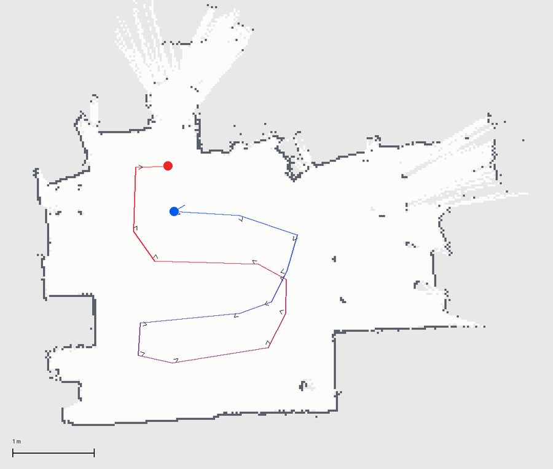
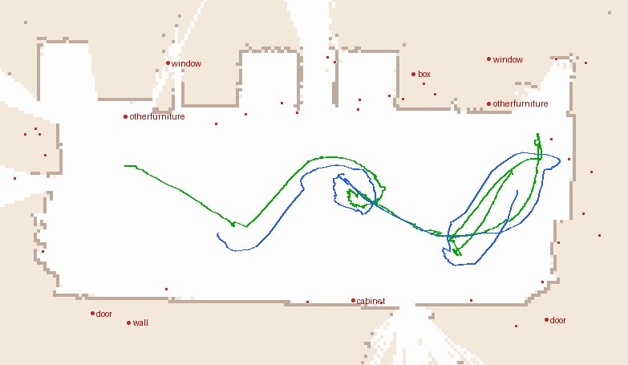
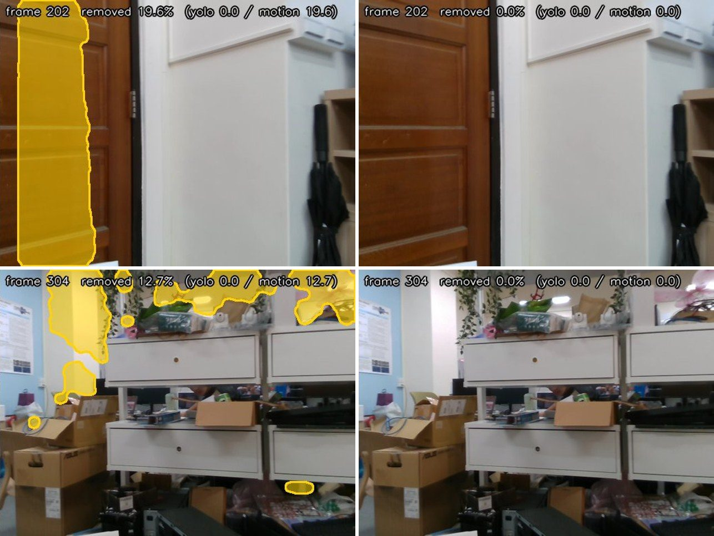
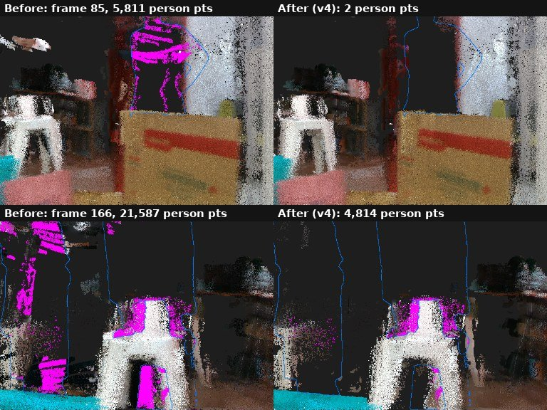
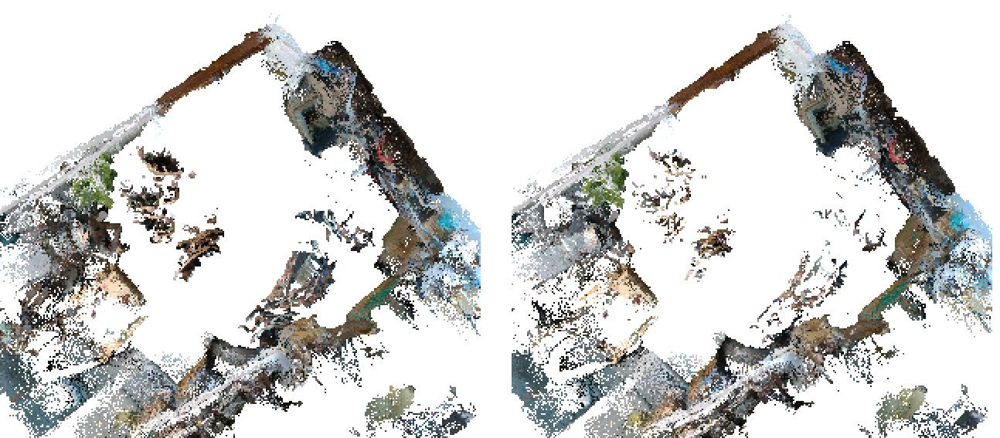
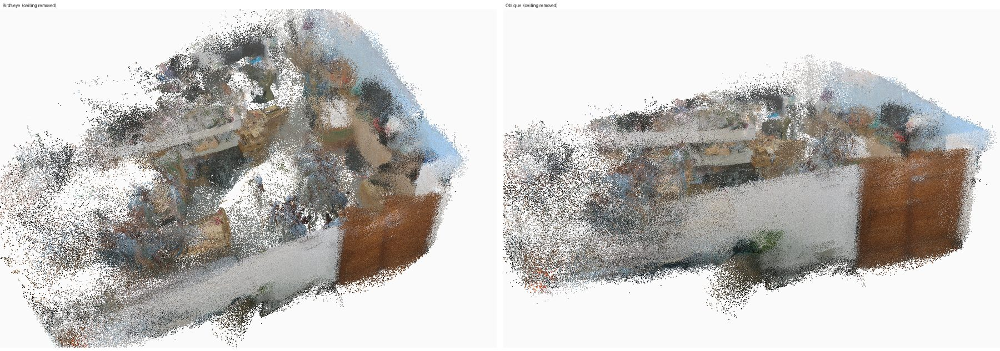

At a glance
Measured on lab recordings and live robot runs from September to October 2026. Details and conditions are in Results.
How the whole system works
One command, run_bridge_oneshot.sh, runs the whole mapping session. It stops twice to ask the operator before anything moves.
Coverage route
- 2D map from the Kachaka Appexported as PNG + YAML, map ID checked
- Coverage pathboustrophedon or spiral, robot-radius and wall-clearance checks
- Goals + previewthinned waypoints, yaw limits, ordered preview image
goals_RUN.csv, preview PNGRobot + camera
- Kachaka
move_to_posegoal by goal, onboard obstacle avoidance, 60 s timeout per goal - Pose2D loggerrobot pose in the 2D map frame
- RealSense D435 → ROS 2 gatewayRGB + depth + intrinsics streamed to the SLAM server
pose2d_RUN.csv, RGB-D stream3D SLAM + masking
- SLAM serversubmaps of 16 frames, loop closure, live 3D view
- Dynamic maskingper chunk, between depth inference and point creation
- 3D carvingremoves points that other views see on a person
static_only_pcd.ply, mask_viz/Map for navigation
- Sim(2) alignmentSLAM trajectory ↔ Pose2D log, camera lever arm corrected
- Semantic instancesobjects with positions in the robot's map frame
- Navigation bundleoccupancy + objects for the robotic agent
The seven stages of a run
| Stage | What happens | Operator |
|---|---|---|
| 1 / 7 | Preflight (containers, camera, arm, disk, stale processes) and show the active Kachaka map | Confirm the map |
| 2 / 7 | Export the 2D map to artifacts/runs/kachaka_2d_VENUE.{png,yaml} | |
| 3 / 7 | Plan the coverage path, thin it to goals, render the preview | Check the preview |
| 4 / 7 | Start the Pose2D logger | |
| 5 / 7 | Start 3D SLAM with masking (1–3 min to load models) | |
| 6 / 7 | Drive the goals one by one; a goal over the timeout is cancelled and skipped | Stand at the e-stop |
| 6.5 | Recording finishes; the map is saved | Never kill the server |
| 7 / 7 | Print (or run with --align) the alignment commands |


Dynamic-object masking
People are always removed. Other movable objects (laptop, bag, bottle…) are removed only while they move or are carried, so a laptop left on a desk stays in the map. Masked pixels never become 3D points.
Semantic: YOLOv9e-seg
Instance masks per frame. Person confidence ≥ 0.15 (others ≥ 0.25), set low on purpose for blurry robot footage.
A person is always removed. Another movable object is removed only if it is moving (≥ 30 % of its pixels have a high flow residual) or carried (touches a person).
Motion: FlowSeek optical flow
Measured flow is compared with the flow that the camera's own motion predicts. Pixels whose residual exceeds an adaptive threshold (median + 3·MAD), checked against both neighbouring frames, are moving.
Geo gate: a motion blob is kept only if it touches a movable-class detection (30 px).
Bridge
Fills a single-frame detector miss between two detections of the same object, so one blurry frame does not leave a "ghost" in the map.



lab_20260925, run move1). Top-down view of the 3D map before (left) and after (right) removal. The person-shaped smears in the open floor area disappear; walls and furniture are kept.Watching it live
While the robot maps, a web view shows the 3D map with removed points in red next to the camera panel, colour-coded by channel (semantic, motion only, bridge). Every frame is also saved to mask_viz/ with a per-frame removed.csv.
Results
All runs are in our lab with the Kachaka robot. "Offline" means a recording replayed through exactly the same server code path as a live run.
| Run | Type | What was measured | Result |
|---|---|---|---|
mapping_20260922_01 | Offline, 389 frames | Mean pixels removed per frame / motion-only share | 2.2 % / 0.1 % |
mapping_20260922_01 | Offline | Person-free frames with >1 % removed, before → after geo gate | 59 → 1 of 296 |
map803_0930_run5 | Live + semantic | Person points left in the 3D map (v1 → v2 → v3 → v4) | 36,244 → 3,546 |
map803_0930_run5 | Live + semantic | Alignment RMSE (lever arm corrected), max error | 0.077 m, 0.151 m |
map803_0930_run5 | Nav bundle | Objects with a goal / in mapped space | 57 / 68, 25 |
onsite_remap_run3 | Live, 407 frames | Alignment RMSE (reference baseline) | 0.104 m pass |
ec129_0911_bridge | Live, 910 frames | Alignment RMSE | 0.108 m pass |
lab_20260925 run3, move1 | Live, people walking | Walking, sitting and carrying people removed | qualitative |
Detector comparison: YOLOv9e-seg vs SAM 3.1
Same recording, 413 chunk-frames. SAM 3.1 runs only offline (≈0.7 s/frame on our Jetson), so YOLO stays the live detector.
| Detector | Frames with a person | Final mask area | Removed on frames neither detector sees |
|---|---|---|---|
| YOLOv9e-seg + geo gate live | 116 | 2.37 % | 0.002 % |
| SAM 3.1 + geo gate | 117 | 2.09 % | 0.008 % |
The two detectors agree on 105 frames; their union covers 128 (+10 % recall), which is a candidate for offline map building.

Getting started
Planning runs on any computer with Python 3.10+. The live pipeline needs the lab machine (Docker, GPU, the SLAM and gateway images, model weights, the Kachaka SDK).
git clone https://github.com/h44343880/kachaka_mapping.git
cd kachaka_mapping
git switch gaurav/dynamic-masking
python3 -m venv .venv && source .venv/bin/activate
pip install -r requirements.txt
python -m unittest discover -s . -p 'test_*.py' -v
# plan a route on any occupancy map (no robot, nothing moves)
python make_bridge_traj.py --map-yaml map.yaml --start 0,0,0 \
--pattern boustrophedon --spacing 0.6 --min-clearance 0.40 \
--out artifacts/runs/traj_demo.csv
python drive_waypoints.py artifacts/runs/traj_demo.csv \
--map-yaml map.yaml --save-goals artifacts/runs/goals_demo.csv
python preview_traj.py --map-yaml map.yaml --traj artifacts/runs/goals_demo.csvWithout --go, drive_waypoints.py only prints the plan.
cp .env.example .env && nano .env # robot address, camera serial, paths, container names # model weights are not in git: yolov9e-seg.pt and thirdparty/ (FlowSeek) cp <method-folder>/yolov9e-seg.pt dynamic_masking/ cp -r <method-folder>/thirdparty dynamic_masking/ set -a; . ./.env; set +a slam_integration/install.sh /path/to/ma-long-server "$KACHAKA_TOOLS_DIR" slam_tools/make_containers.sh # only creates missing containers # after every reboot docker start "$KACHAKA_AI_CONTAINER" "$KACHAKA_SLAM_CONTAINER" $KACHAKA_PYTHON slam_tools/kachaka_ctl.py status slam_tools/cam_check.sh # camera must report USB 3.x ./preflight.sh --name RUN
Every .env key is described in the masking guide. Ask Gaurav for the weights folder on the lab machine.
# window 1: SLAM server with masking (wait for "models resident") tmux new -s t1 slam_tools/run_t1_server.sh --mode rgb+depth+intr --backend ma # window 2: replay a recording through the same code path as live python3 slam_tools/replay_ab.py mapping_20260922_01 offline_test1 # top-down before | after | removed docker exec "$KACHAKA_AI_CONTAINER" python \ "$KACHAKA_CODE_DIR_CT/kachaka_mapping/slam_tools/bev_compare.py" /fungi/outputs_malong/offline_test1
Expected on mapping_20260922_01: about 2.2 % of pixels removed per frame, about 0.1 % from motion alone.
# 1. plan only, then open artifacts/previews/preview_goals_RUN.png ./run_bridge_oneshot.sh --name RUN --venue VENUE --goal-timeout 60 --plan-only # 2. full run in tmux: answer y twice (map correct? / route OK, robot moves?) tmux new -s mapping ./run_bridge_oneshot.sh --name RUN --venue VENUE --reuse-map --goal-timeout 60 # 3. watch live python3 slam_tools/live_view.py "$KACHAKA_TOOLS_DIR/outputs_malong/RUN" --mask --port 8092
Use a new --name every run and a new --venue whenever the App map changes. Start about 1 m off the dock; planning from the dock fails.
--plan-only first, check the preview, keep the path clear, and keep a trained person within reach of the emergency stop. Don't use -y on a first run. Never kill the SLAM server while it records or saves, because the map in memory is lost.Repository layout
Machine-specific values (robot address, camera serial, paths) live only in a local .env and are never committed.
| Path | Purpose |
|---|---|
run_bridge_oneshot.sh | The seven-stage field workflow, with confirmation before motion |
make_bridge_traj.py, drive_waypoints.py, preview_traj.py | Coverage planning, goal thinning and validation, previews |
preflight.sh, arm_cam_tune.sh | Read-only site checks; camera view and arm stow-pose tuning |
dynamic_masking/ | The masking method: chunk_fusion_masker.py (fusion, object policy, geo gate), dynamic_object_mask.py (YOLO), dynamic_fusion.py + flowseek_flow.py (motion), motion_compensation.py |
slam_integration/ | fusion_solver.py hooks the masker into the SLAM server, adds the live view and 3D carving; small patches for the server and camera gateway; idempotent install.sh |
slam_tools/ | Server and gateway launchers, live view, replay, robot control (kachaka_ctl.py), camera check, cleanup, bird's-eye comparison |
docs/ | Guides, validation reports and this page |
Hardware and software
- Robot: Kachaka mobile base (driven through the Kachaka API,
move_to_pose), with a robot arm that holds the camera in a fixed stow pose during mapping. - Camera: Intel RealSense D435 RGB-D on USB 3.
- Compute: NVIDIA Jetson (aarch64) running two Docker containers: a camera-to-ROS 2 gateway and a GPU container with the SLAM server and the masker.
- Models: YOLOv9e-seg (semantic), FlowSeek (optical flow), the lab's ma-long SLAM backend; SAM 3.1 for offline evaluation.
Documentation
Everything below is on the gaurav/dynamic-masking branch.
Limitations and next steps
Known limitations
- With the geo gate on, an object the detector cannot label is no longer removed by motion alone (
DYNAMIC_GEO_GATE=nonerestores it). - When a person leans on a stool or box, the per-frame mask also covers the object; it survives only through other views.
- A still object next to a still person (e.g. a suitcase) can be treated as carried and removed.
- Tinted glass lets depth see through it, which gives blotchy areas; this isn't a masking error.
- A 0.40 m wall clearance removes much of the free space, so always check the preview.
Being evaluated
- YOLO ∪ SAM 3.1 ensemble for offline maps (+10 % recall).
- A few-pixel person-mask dilation for edge residue.
- A stricter "carried" rule: carried only if moving, or mostly inside the person mask.
- Motion compensation with a fixed threshold in compensated space (the adaptive threshold cancelled the gain).